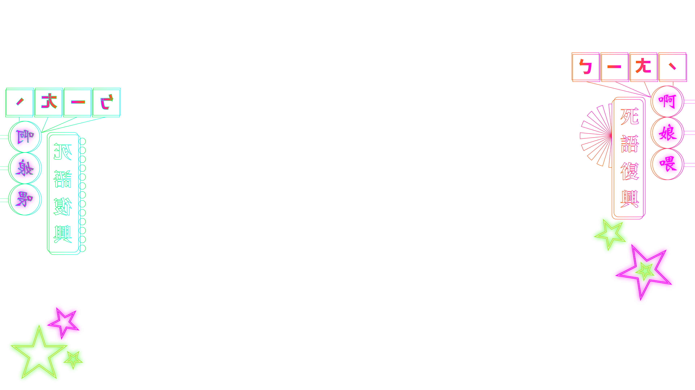

D 死語詞典
按空白鍵進遊戲
死語詞典
▲▼ 滑動 ESC 回首頁
引言
按空白鍵繼續
拍照
P1

P2

按空白鍵進入拍照倒數
建模完成
P1
P2
按空白鍵進入下一步
舞台選擇
▲▼ 選擇 空白鍵決定
音樂選擇
▲▼ 選擇 空白鍵決定
玩法說明
P1
W
ASD
箭頭落到判定線時
按下對應的 W A S D
P2
↑
←↓→
箭頭落到判定線時
按下對應的方向鍵
LOADING 0%
P10
0P2
←
↓
↑
→
←
↓
↑
→
結算
0
0
按空白鍵回到主畫面